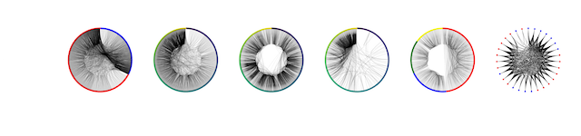
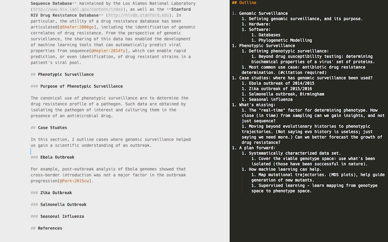
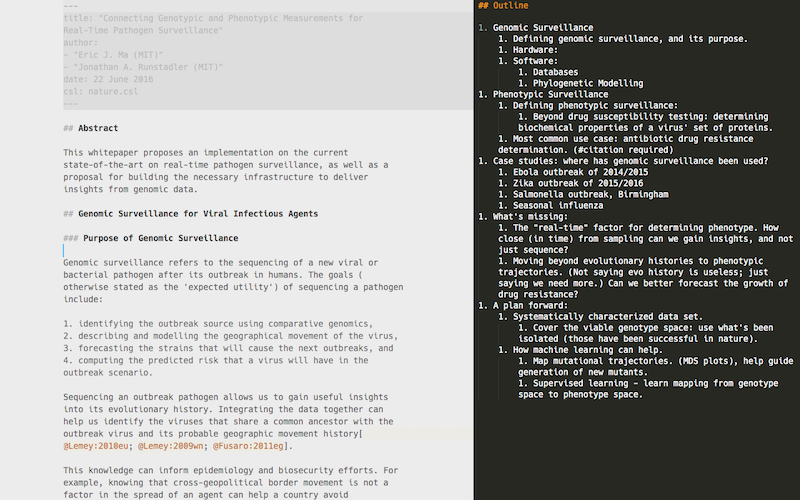
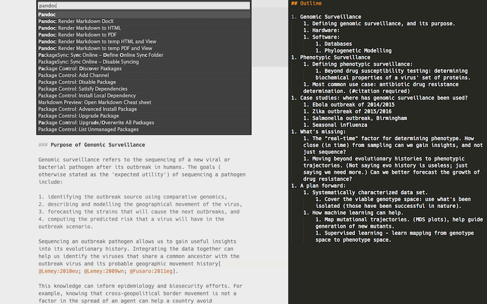
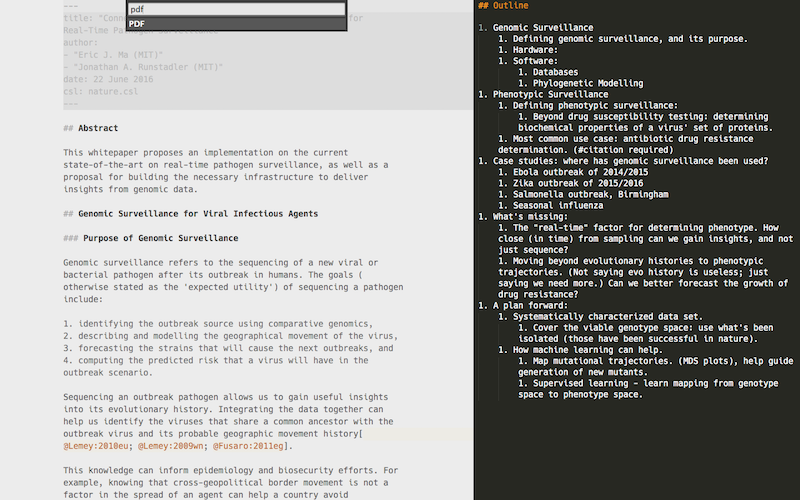
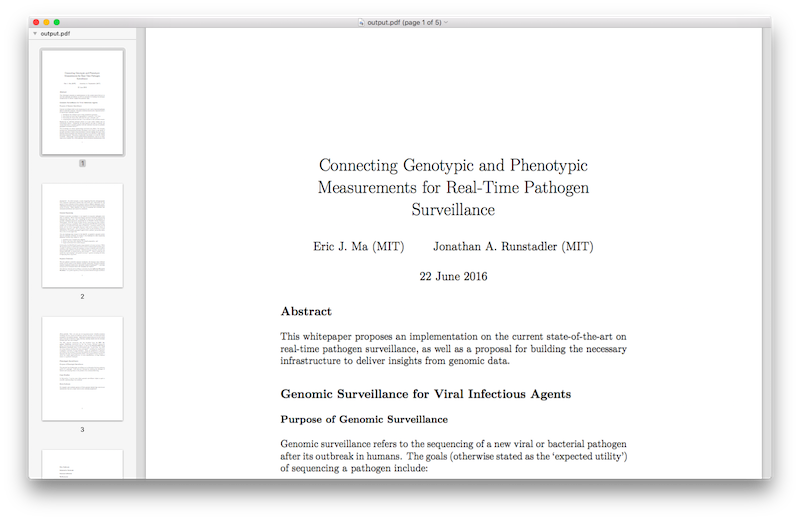

The Shaping of an Effective Leader: Chapter 2
Leadership Tasks
These are the leadership tasks that lead to effectiveness:
- Developing a plan of action.
- Determining a method of analysis
- Cultivating an understanding of the tools needed.
- Making decisions.
- Committing to a course of action, allocating resources so that the greatest opportunities can be realized.
The purpose of an organization is to get uncommon results from common individuals.
Effective Practices
- Ask what needs to be done.
- Focus not on what you like to do but on what is right for this organization.
- Develop a bias for action and develop plans reflective of that bias.
- Work to make effective decisions - and follow them up.
- Communicate the appropriate amount of information at the appropriate level of transparency.
- Maintain a focus on opportunities and innovations rather than problems.
- Coordinate and run productive and effective team meetings.
- Build an effective team.
Beebe gave the example of U.S. President Harry Truman. He was widely regarded as being strong in domestic policy and weak in foreign policy. Truman didn't inherit a country at peace internationally; rather he came into the presidency in the middle of international turmoil. Truman surrounded himself with foreign policy experts, who in turn helped him "level up" his foreign policy skills.
In striving for effectiveness, treating people with "fairness" (on paper) is actually ineffective. Beebe states that Peter Drucker argues that leaders should focus on motivating the small handful/percentage of people who deliver the largest amount of desired results, keeping them motivated in line with the mission of the organization.
Challenges
The challenge that a leader faces here is that of envy. There may be direct or indirect reports who are stronger in a particular skill, relative to myself. I have to avoid envy cropping up, as that will diminish my effectiveness in motivating, rewarding, and retaining the services of those individuals. People we enlist/hire to help us on our mission should be better than us in some respect, otherwise it's wasteful effort duplication cropping up again.
Did you enjoy this blog post? Let's discuss more!
Productivity Hack: Get Rid of Visual Clutter
For the past few days, I have moved into a default full-screen mode, in which I hid both my dock and my menu bar. (Hiding the menu bar is enabled by going to System Preferences -> General and checking Automatically hide and show the menu bar. This I did without explicitly launching stuff in "full-screen mode", which most Mac apps have the capability for. Not sure why, but I think the little tweak of having the menu bar hidden (though still open) somehow has a large effect. My desktop ends up looking like the following image (by default):

Additionally, I have started to see the importance of having a single browser tab open, or a single document open, or a single (and logically coherent) set of Python modules open to focus on a single task.
By removing these distracting visual elements out of the way, I can deeply focus on the task at hand instead. No longer will there be a little lingering icon that I'm tempted to click. There's no longer the element of distraction that comes from other "stuff" that's running on my computer.
Did you enjoy this blog post? Let's discuss more!
New Network Analysis Logo!
I just finished reworking the examples that I'm using for my Network Analysis tutorial, and I managed to create a representative logo for it! :)

Inspired by Giles Hall, who hashed people's names to create uniquely procedurally-generated snowflakes (implying that everybody's a special snowflake, that is) (talk). In this case, I wrote a function that computes a numerical hash of a person's name, which is then parsed into a string to determine the order in which each of those network diagrams are added on.
More details can be found in this notebook!
Did you enjoy this blog post? Let's discuss more!
In Defence of Extreme Openness
I found an awesome slide deck by Jake Vanderplas. It's a great case for doing science in the open; highly recommended.
Did you enjoy this blog post? Let's discuss more!
Tooling up for Plain Text Academic Writing in Markdown
I finally got down to doing it! Here's my brief notes on how I set it up; it may change a bit later on, as my needs evolve, but it should be enough instructions for others to get setup.
Motivation
I'm writing a white paper on genomic surveillance, so I thought I'd experiment with something new. By switching over to writing in plain text, I can ignore all distractions by other word processors. I'm looking at you, Word, Google Docs and others.
Because I get to write in plain text, I also get to version control the text. By selectively committing logical blocks, I can also easily selectively revert unwanted commits; it's rare, but once in a while it's saved my work.
Because it's plain text, I can export to anywhere with a bit of configuration.
Because it's written publicly, it's great.
Overview
What I do here is basically use Sublime Text 3 (ST3) as a word processor. BibTex libraries are used for keeping track of papers, but I like Papers for organizing more than BibDesk - automatic downloading of PDFs is the best part. My compromise, then, is to export my Papers library to a master BibTex library prior to compiling everything into a single PDF. Papers can also add in Pandoc-style citations, which Pandoc can then parse to make an automatic bibliography. Everything is kept under version control, for reasons stated above.
It basically took me one morning's worth of time invested in tooling this up, but I can already imagine the amount of time saved by minimizing the time spent on formatting references, figure numbers, versioning, and (most of all) being able to write without being distracted.
Tools
- Papers for Mac (paid)
- Pandoc (free)
- Sublime Text (free/paid) - you can use it for free, but I decided to fess up and pay for it, the text editor is that good, that powerful, that I would encourage you to do the same too.
- Git and GitHub (free)
Setup
Central Bibliography
- Set up a version controlled GitHub repository for the master bibliography file.
- In Papers, export the library to that repository's directory. Take note of the
/path/to/master/library.bib.
General Tooling
- Install Pandoc, either using
homebrew, or download a fresh copy of the installer binary. Note the/path/to/pandoc. - Install the LaTeX distribution, make sure that
pdflatexis bundled. Note the/path/to/pdflatex. - Fork the Citation Styles repository, and clone it to disk.
- Install the
pandoc-fignosplugin, to enable automatic figure numbering. Again, take note of the/path/to/pandoc-fignos.
Sublime Text Tooling
Install:
- Package Control
- Pandoc
- CiteBibTex
- AcademicMarkdown
- Git
- GitGutter
- PackageSync
- BracketHighlighter
- WordCount
Configure:
Pandoc
"pandoc-path": "/path/to/pandoc",
"PDF": { "scope": { "text.html": "html", "text.html.markdown": "markdown" }, "pandoc-arguments": [ "-t", "pdf", "--latex-engine=/path/to/pdflatex", "-o", "/path/to/output.pdf", "--filter", "/path/to/pandoc-fignos", "--filter=/path/to/pandoc-citeproc", "--bibliography=/path/to/master/library.bib", ] }
Apart from placing these pandoc-arguments under the PDF section, you may want to do the same for the HTML and Word sections.
CiteBibTex
Find the corresponding configuration fields, and change them to the following (making appropriate changes):
"bibtex_file": "/path/to/master/library.bib",
"autodetect_citation_style": true,
User Interface
Today I learned that ST3 has a "Distraction Free Writing Mode", under the View menu. Earlier on, I also learned that it has a pane view mode, also under View -->Layout. Both have associated shortcut keys. My writing interface ended up looking something like what's in Figure {@fig:two-pane}.
{#fig:two-pane}
My outline is on the right, and the main text is on the left, and there's no distracting tabs, sliding preview, or directory structure (as is what I'm used to for coding).
Writing
Get started by adding the YAML headers in the document (Figure {@fig:yaml-header}).
{#fig:yaml-header}
Specifically, the format of what I have above is:
--- title: "My Title Here" author: - "Author 1 (Affiliation)" - "Author 2 (Affiliation)" date: 22 June 2016 csl: nature.csl ---
More details on what metadata can be stored in the headers can be found on the Pandoc README.
Citations
Citations are done in Markdown by inserting:
[@citekey]
where the citekey is automatically generated by Papers, usually in the form of LastName:YYYY[2- or 3-letter hash]. An example of what gets inserted is [@Young:2013px]. I was reading through Papers' documentation on the generation of a "universal" citekey, and I quite like the idea. I think the specification is worth a read, and is an idea worth spreading (sorry, I like TED talks).
I intentionally configured my ST3 Pandoc package settings to use a global master library, rather than a project-specific one. I think it stemmed more from laziness than anything else; one less thing to manage is a better thing.
Generating Outputs
Note that the way I had configured Pandoc (above) for PDF outputs was to use the master .bib library for matching up references. An additional thing I did was to keep a copy of the citation style language (CSL) markup file in the same directory as the Markdown document.
Within ST3, we can use the Command Palette to quickly generate the PDF output desired. Steps are:
Select Pandoc

Select PDF as the output

Inspect that gorgeous PDF!

Check your references!

Just to show how the figures get numbered correctly (I don't have any in the draft whitepaper I'm writing), you can inspect the source code for this blog post, and the associated pdf file. Note how I've not numbered anything except the associated files. It's pretty cool.
Alrighty - and that's it! Hope it helps others too.
Did you enjoy this blog post? Let's discuss more!